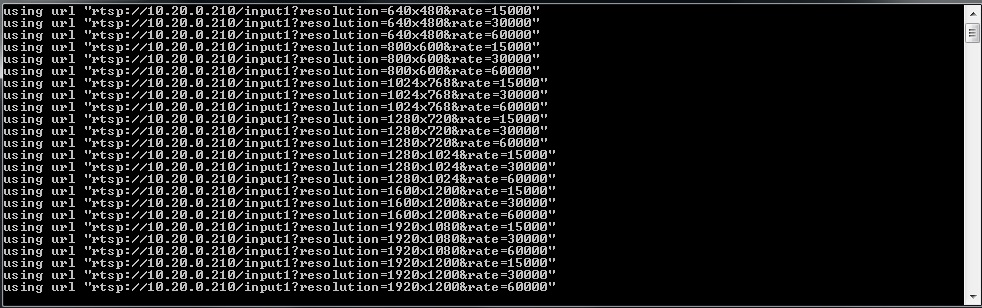
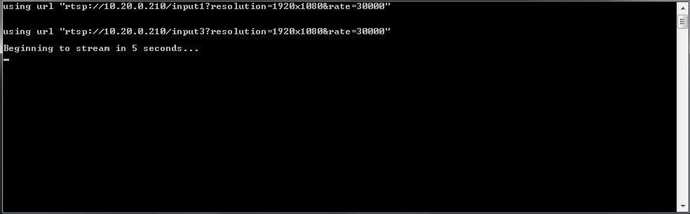
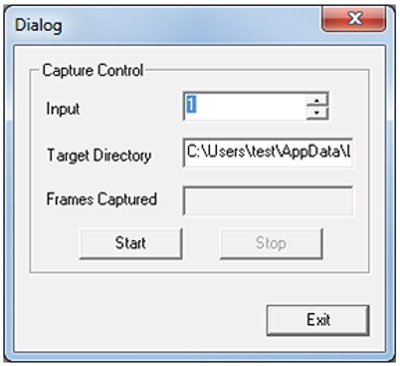

In order to stream encoded sources using RTSP OEM_COMPANY provide two applications; OEM_SQX_TAG Server Unicast and OEM_SQX_TAG Server Multicast.
The applications are available to download from our web site at: OEM_URL
Run the Unicast server application from the Windows Start Menu (under the OEM_SQX_TAG folder) to obtain a list of available RTSP media session URIs. OEM_SQX_TAG Server Unicast can be used to create input handles for use with OEM_COMPANY OEM_ACTIVESQX or advanced media server applications such as VLC or WOWZA.

The URL is in the form:
The application is a unicast streaming server that supports Vision capture inputs. The application advertises available H.264 compatible Vision inputs as sockets, and displays the required rtsp URL. Note that the Vision input(s) are not yet opened for encoding in this application.
A client application can connect to the exposed socket using the socket address. OEM_SQX_TAG Server Unicast receives notification of the connection request and opens the Vision input for encoding and instantiates the stream.
Encode parameters (level, profile, bit-rate and key-frame interval) are set by the server application when opening the stream.
OEM_SQX_TAG Server Unicast is based on the sources from Sample6A in the RGBEasy SDK (please see below).
Run the Multicast server application from the Windows Start Menu (under the OEM_SQX_TAG folder) to obtain a list of available RTSP media session URIs. OEM_SQX_TAG Server Multicast can be used to create input handles for use with OEM_COMPANY OEM_ACTIVESQX or advanced media server applications such as VLC or WOWZA.

The URL is in the form:
The application is a multicast streaming server that supports Vision capture inputs. The application advertises available H.264 compatible Vision inputs as sockets, and displays the required rtsp URL. Note that the Vision input(s) are immediately opened for encoding in this application.
A client application can connect to the exposed socket using the socket address.
Encode parameters (level, profile, bit-rate and key-frame interval) are set by the server application when opening the stream.
OEM_SQX_TAG Server Multicast is based on the sources from Sample6B in the RGBEasy SDK (please see below).
The OEM_VISION_TAG Driver and Application contains Software Development Kit (SDK) Samples. To have access to these samples, the SDK must be selected for installation when the drivers and application are installed. The two samples below are targeted specifically at the OEM_VISIONRGB_HDSQX encoding functionality. All other RGBEasy samples also work with this card for uncompressed formats.

Use the up/down arrows to select the input you wish to capture from.
Input the directory into which the capture will be saved.
Once the Input and Target Directory have been selected, click on Start to initiate the capture.
The sample uses the DGCMEDIASAMPLE structure (see dgcmedia.h) for receiving raw and/or compressed media samples from the Vision device.
If the Vision input is not capable of providing H.264 compressed video, the application will save an image (in NV12 format) for every frame captured.
If the Vision input is capable of providing H.264 compressed video, the application will save a video file consisting of H.264 data. The file will not have a file header, and so may not be playable in most video players.
From the SDK area, the projects will open and build using Visual Studio 10 or above.
These samples require the presence of the live555 header files and statically linked libraries. The latest live555 source package can be obtained from http://www.live555.com/liveMedia/
Copy the contents of the downloaded live directory into the live directory in this sample application's directory.
Build the live libraries according to recommended instructions.
Further instructions can be found in the Readme.txt file included in the RGBEasy SDK directory.
Note: Ensure that the configuration (debug/release) matches the version of live555 libraries that has been pre-built.
We are continuously developing the technology used within our product ranges delivering outstanding innovative solutions, therefore the specifications may change from time to time.